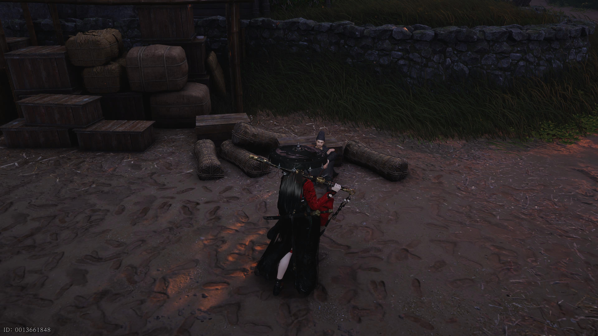
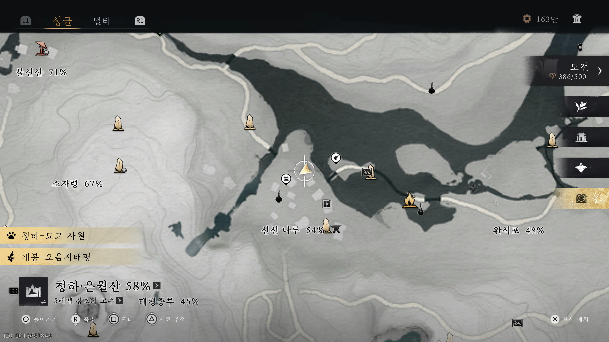
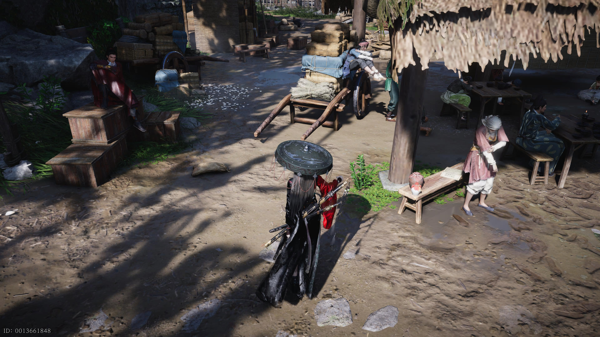
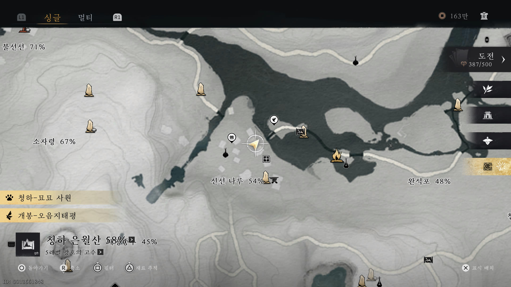
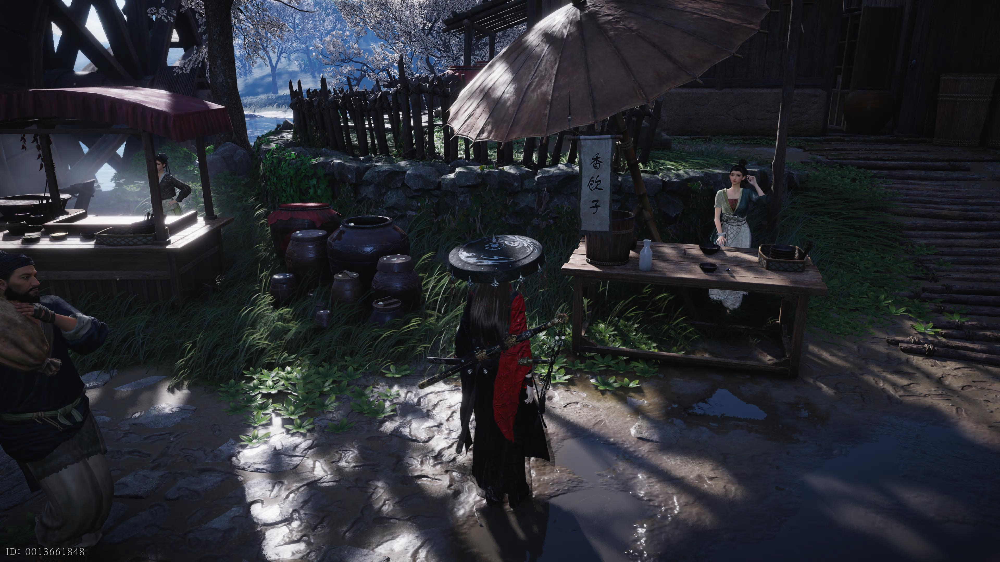
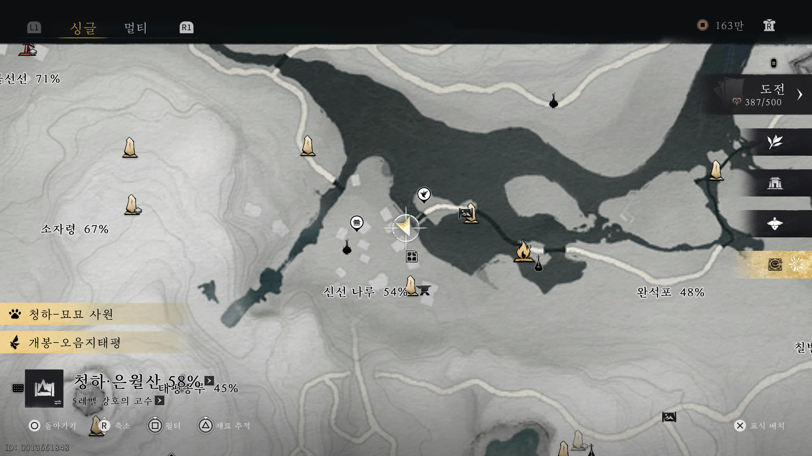
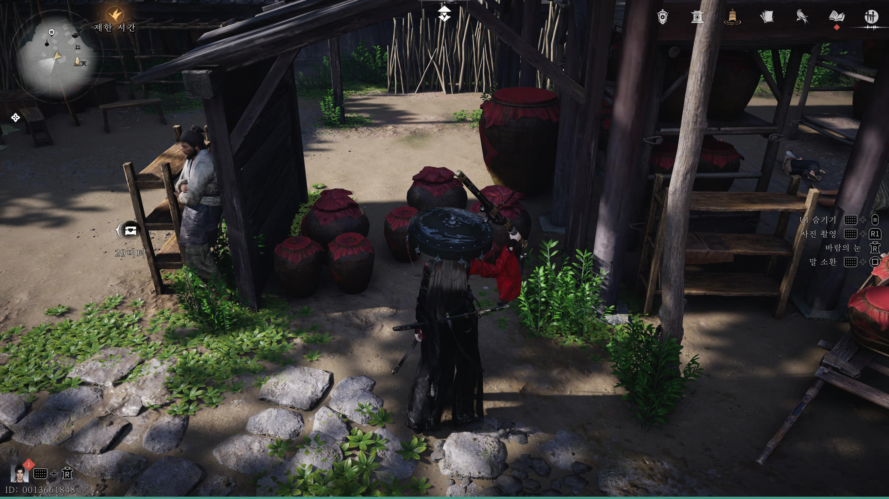

만사록
욕망의 심연
또 고별주인가?
📜 퀘스트 개요
술만 있으면 무엇이든 할 수 있다고 호언장담하는 목백과의 끈질긴 거래가 시작됩니다.
그의 끝없는 술 욕심을 채워주며, 숨겨진 정보를 얻어내는 것이 이번 퀘스트의 목표입니다.
술주정뱅이 목백
아래 위치에 있는 목백과 대화하세요.
그는 술만 주면 뭐든 다 할 수 있다며, 대가로 고별주를 요구합니다.


첫 번째 배달: 고별주
안내된 위치로 이동하여 고별주를 획득한 후, 목백에게 선물해주세요.


두 번째 배달: 특제 고별주
술을 건넸지만 그는 만족하지 않습니다. 더 많은 정보를 원한다면 정제된(특제) 고별주를 가져오라고 합니다.
(완벽한 술주정뱅이가 확실합니다.)
아래 위치에서 특제 고별주를 구해 목백에게 전달하세요.


마지막 배달: 고별주 단지
특제 고별주를 마신 목백은 여자 보스에 대한 정보를 흘리다가, 이번엔 아예 고별주 한 단지를 요구합니다.
아래 위치에서 술 단지를 찾아 목백에게 가져다주세요.


목백에게 마지막으로 고별주 단지를 전달하면
그의 길고 긴 술 심부름이 끝나며
퀘스트는 완료됩니다.